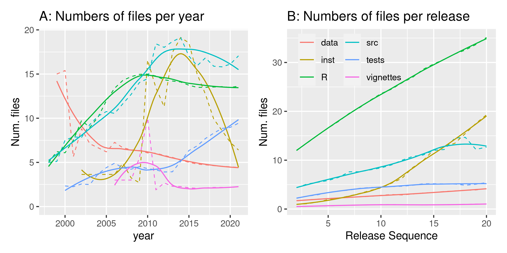

library ("pkgstatsAnalyses")
here <- here::here ()
v_data_dir <- file.path (here, "vignettes", "data")
logmean <- function (x, ...) {
10 ^ mean (log10 (x [which (x > 0)]), na.rm = TRUE)
}
n_files_file <- file.path (v_data_dir, "fig03-n-files-data.Rds")
n_files_exists <- file.exists (n_files_file)
datafile <- file.path (here, "data-raw", "pkgstats-results.Rds")
fig03_png <- file.path (here, "vignettes", "figures", "fig03.png")
f_fig3_pkg_level <- file.path (v_data_dir, "fig03-pkg-n-files.Rds")
do_fig3_pkg_n_files <- !file.exists (f_fig3_pkg_level) & !file.exists (fig03_png)
# takes a few tens of seconds
x <- load_pkgstats_data (datafile, raw = TRUE, latest = FALSE)
nfiles_one_year <- function (x, year = 2015) {
x1 <- x |>
filter (year <= !!year) |>
group_by (package) |>
slice_max (date) |>
summarise (R = logmean (files_R),
src = logmean (files_src),
inst = logmean (files_inst),
vignettes = logmean (files_vignettes),
tests = logmean (files_tests),
data = logmean (num_data_files))
n_mean <- colMeans (x1 [, -1], na.rm = TRUE)
c (year = year, n_mean)
}
dat <- vapply (sort (unique (x$year)), function (i)
nfiles_one_year (x, i),
numeric (7))
dat <- data.frame (t (dat))
dat$year <- lubridate::year (paste0 (dat$year, "-01-01"))
xy <- x |>
group_by (year) |>
summarise (R = logmean (files_R),
src = logmean (files_src),
inst = logmean (files_inst),
vignettes = logmean (files_vignettes),
tests = logmean (files_tests),
data = logmean (num_data_files))
dat$what <- "cran_by_year"
xy$what <- "annual"
dat <- rbind (dat, xy)
dat$inst [!is.finite (dat$inst)] <- NA
dat$vignettes [!is.finite (dat$vignettes)] <- NA
dat$tests [!is.finite (dat$tests)] <- NA
dat$data [!is.finite (dat$data)] <- NA
saveRDS (dat, n_files_file)
x_per_pkg <- load_pkgstats_data (datafile, raw = TRUE, latest = FALSE) |>
group_by (package) |>
summarise (R = files_R / lag (files_R),
src = files_src / lag (files_src),
inst = files_inst / lag (files_inst),
vignettes = files_vignettes / lag (files_vignettes),
tests = files_tests / lag (files_tests),
data = num_data_files / lag (num_data_files),
seq = seq_along (R),
.groups = "keep") |>
mutate_at(vars (R, src, inst, vignettes, tests, data),
~replace (., !is.finite (.), NA)) |>
group_by (seq) |>
summarise (R = mean (R, na.rm = TRUE),
src = mean (src, na.rm = TRUE),
inst = mean (inst, na.rm = TRUE),
vignettes = mean (vignettes, na.rm = TRUE),
tests = mean (tests, na.rm = TRUE),
data = mean (data, na.rm = TRUE),
.groups = "keep") |>
filter (seq > 1) |>
pivot_longer (cols = c (R, src, inst, vignettes, tests, data)) |>
rename (dir = name)
saveRDS (x_per_pkg, f_fig3_pkg_level)
dat <- readRDS (n_files_file) |>
mutate (inst = inst * max (src) / max (inst, na.rm = TRUE)) |>
filter (what == "cran_by_year") |>
pivot_longer (cols = c (R, src, inst, vignettes, tests, data)) |>
rename (n_files = value, dir = name)
dat_ann <- readRDS (n_files_file) |>
mutate (inst = inst * max (src) / max (inst, na.rm = TRUE)) |>
filter (what == "annual") |>
pivot_longer (cols = c (R, src, inst, vignettes, tests, data)) |>
rename (n_files = value, dir = name)
p1 <- ggplot (dat, aes (x = year, y = n_files, color = dir)) +
geom_line (lwd = 0.4, lty = 2) +
geom_smooth (method = "loess", formula = "y ~ x", se = FALSE, lwd = 0.5) +
#geom_line (data = dat_ann, lty = 2) +
ggtitle ("A: Numbers of files") +
ylab ("#files") +
theme (legend.position = "none")
# dat_ann are very similar but much noisier, so not shown
x_per_pkg <- readRDS (f_fig3_pkg_level)
# rm 1st inst value which is anomalously high:
x_per_pkg$value [x_per_pkg$dir == "inst" & x_per_pkg$seq == 2] <- NA
p2 <- x_per_pkg |>
filter (seq <= 20) |>
ggplot (aes (x = seq, y = value, colour = dir)) +
geom_line (lwd = 0.4, lty = 2) +
geom_smooth (method = "loess", formula = "y ~ x", se = FALSE, span = 0.7, lwd = 0.5) +
xlab ("Release Sequence") +
ylab ("Ratio of #files") +
ylim (c (0.9, 1.3)) +
ggtitle ("B: Ratio of #files / release") +
guides (color = guide_legend (ncol = 2)) +
theme (legend.title = element_blank(),
legend.position = c (0.3, 0.85),
legend.background = element_rect(fill='transparent', colour='transparent'))

Figure 3 (A) Number of files in different diretories per year (with legend in panel B). Solid lines represent loess-smoothed interpolations, while dashed lines are raw annual values (not CRAN snapshots). (B) Proportional increases in numbers of files per release.